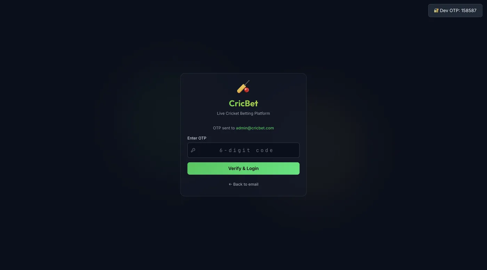
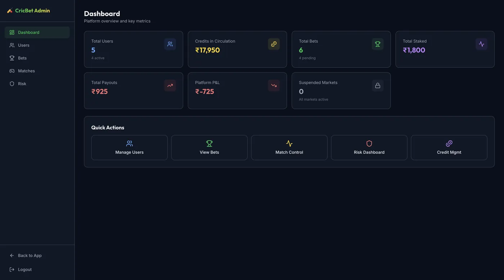
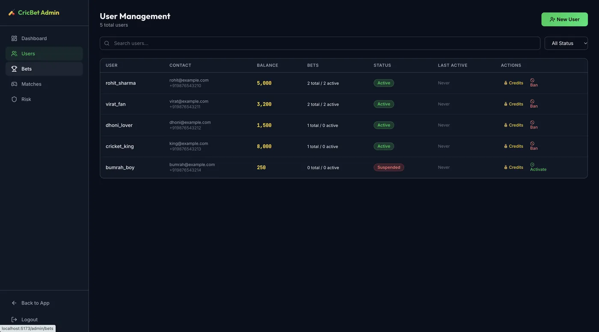
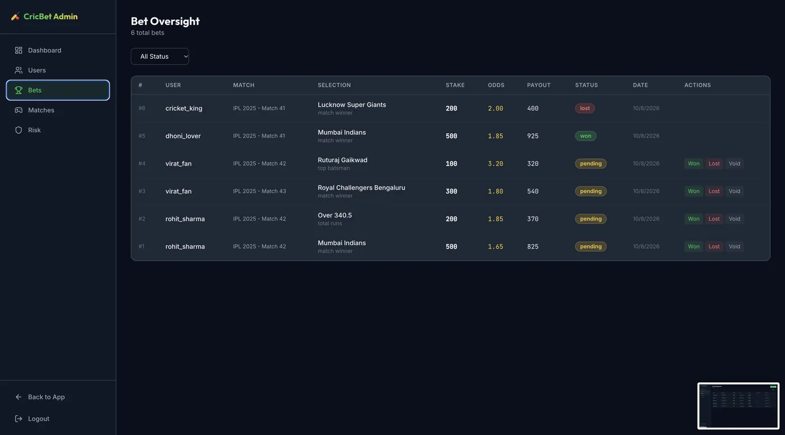
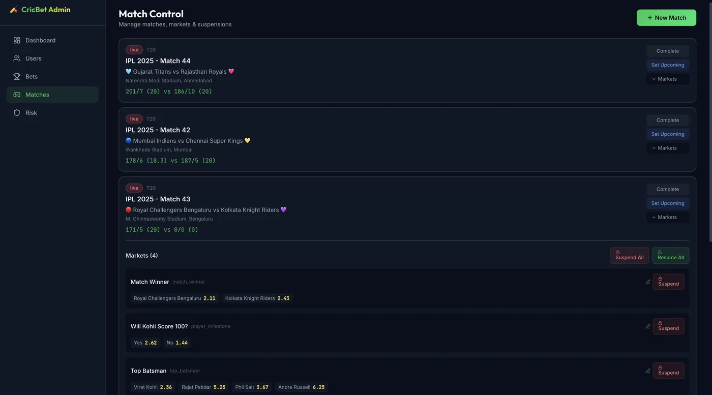
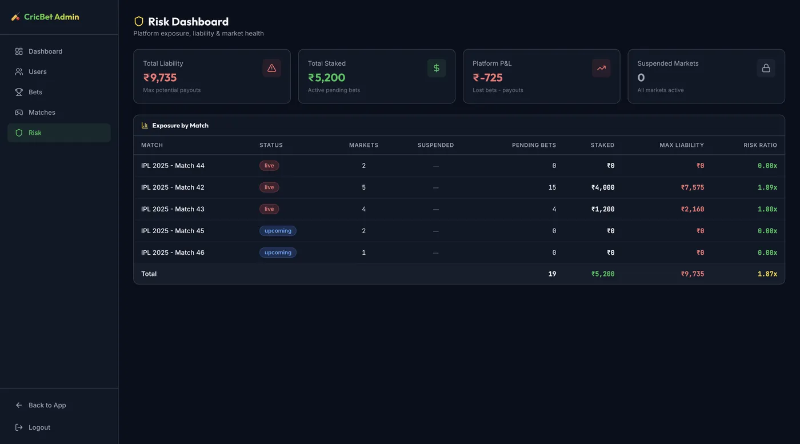
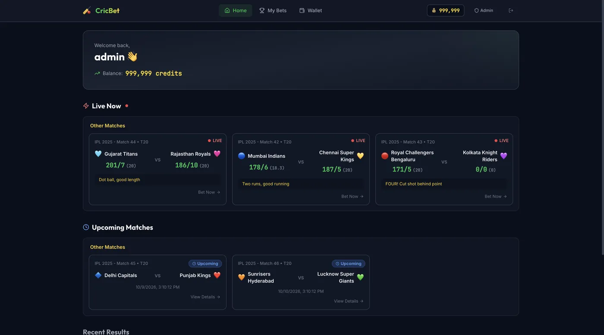
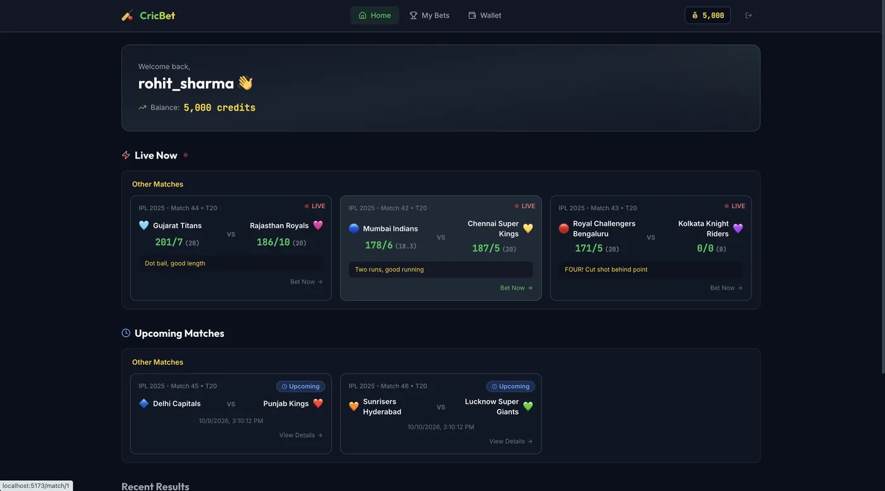
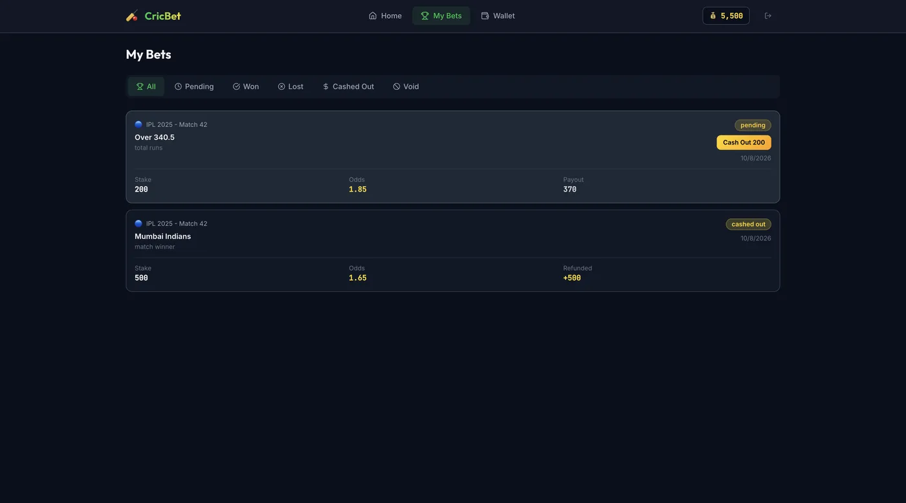

CricBet — a live odds engine, not a mock.
A real-time cricket betting surface: live scores, multiple betting markets per match, and admin-controlled credit management. The hard part of a betting product is state — odds moving, bets opening and settling, user credits — and all of it is live here.









click any image to enlarge · drag/scroll horizontally for more
Under the hood.
Scores and odds update as the match state changes — the UI is a live view over moving data, not a snapshot. Multiple simultaneous betting markets per match, each with its own prices and open/settled lifecycle.
User credit balances, bet placement against balance, and settlement flow — with an admin panel that controls credits and markets. The trust boundary (user can't self-award credits) is the actual engineering here.
A stateful SPA where the hard work is state management: concurrent updates, optimistic bet placement, and consistent money math in the client — the kind of UI correctness that looks easy and isn't.
The whole product — domain modeling, markets UI, admin surface — was scoped and deployed in a single agent-driven build pass on Netlify. A demo of what the forward-deployed loop delivers in a day.
Why it matters: betting surfaces are unforgiving — state inconsistencies and money bugs are visible instantly. Building one that holds together live is a direct demonstration of agent-built ≠ fragile.
live: batting-demo.netlify.app · react + vite · realtime state